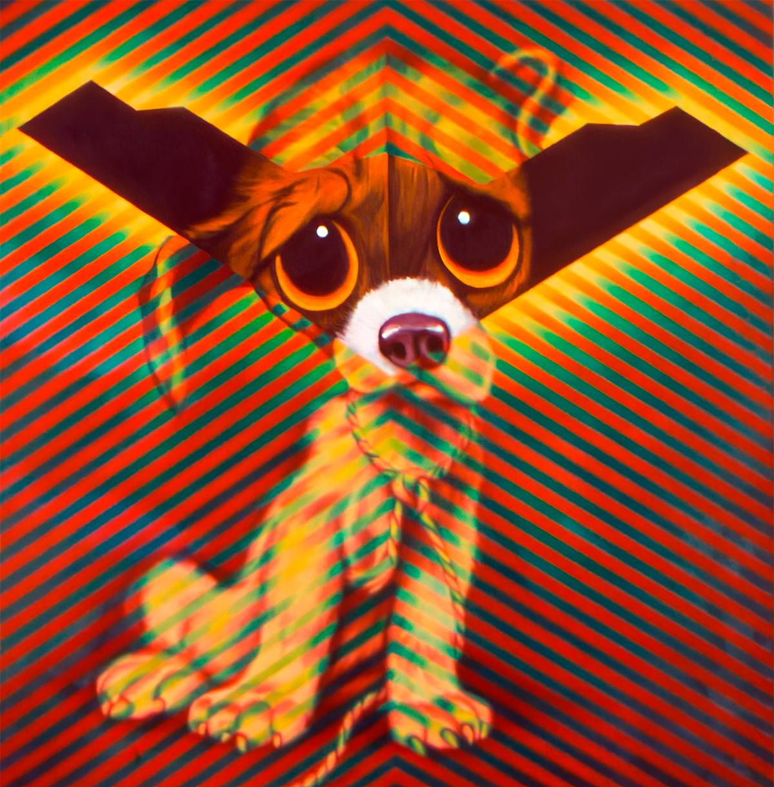
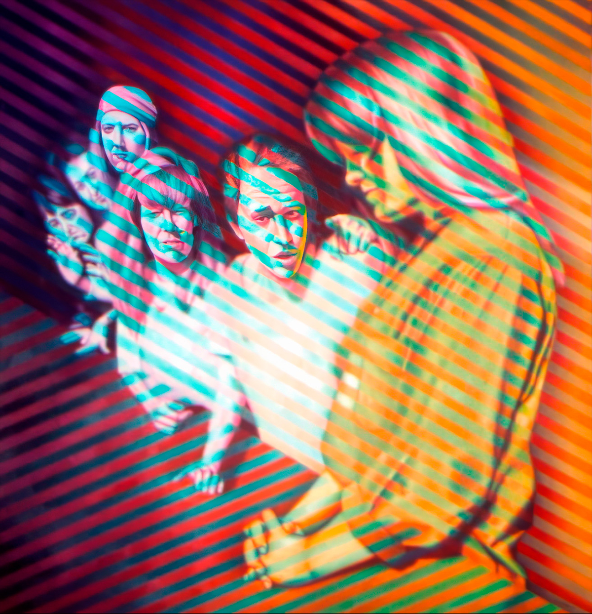

Exhibitions
Absolut Collaboration, Gallery Stendhal, 626 Broadway, New York, New York, US, March 12–April 12, 1992.

Literature
David Betz, “Absolut Collaboration – The Role of the Artist in Modern Society,” SunStorm Fine Art, March–April 1992, p. 33.

Provenance
RE-000066A: Private collection.
RE-000066B: Artist's personal collection.
RE-000066C: Private collection.
Ancillary Documentation